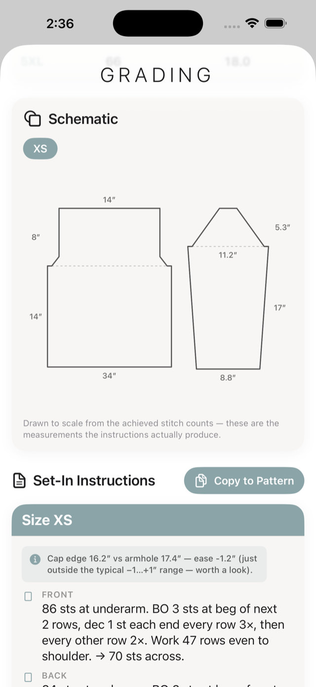
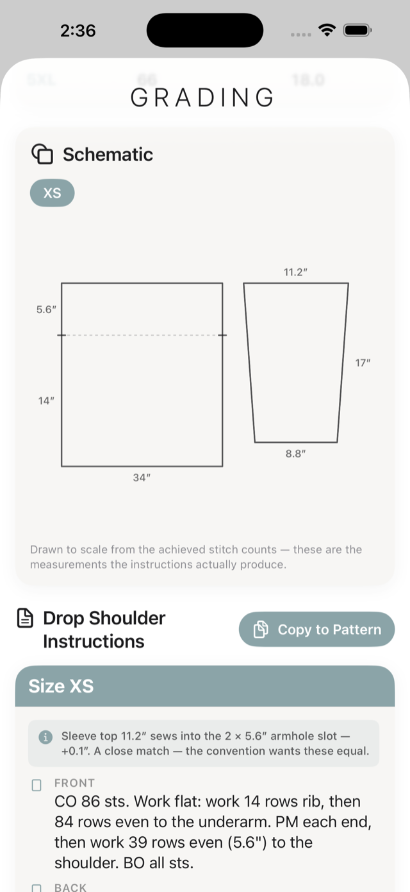
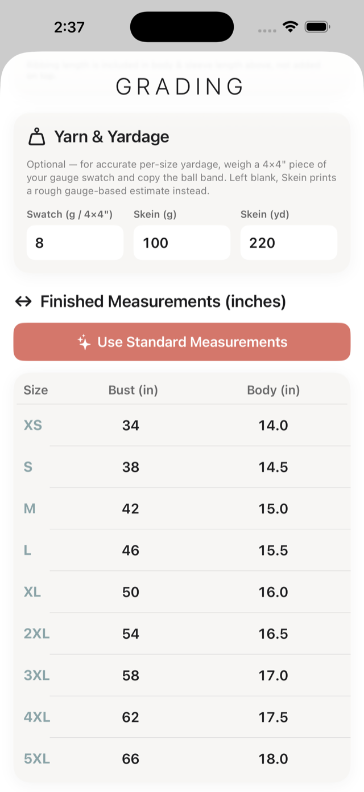
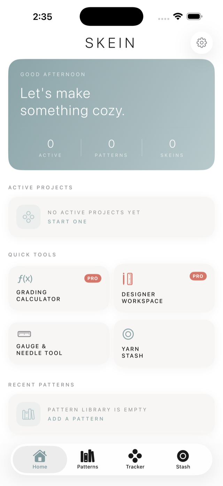

The math behind a published pattern.
Grade a design across every size — raglan, circular yoke, set-in sleeve, or drop shoulder — with instructions written to match and every stitch count verified.
Download on the App Store iPhone · iPad · Free, with an optional Designer Pro subscriptionFor knitters
The things you reach for on the needles — free forever, no account, nothing stored on anyone else's server.
A row counter that keeps its place — current section, rows worked, and notes, saved as you go.
Log what you own by brand, colorway, and fiber. Each weight shows a true-to-scale strand, so lace really does look finer than bulky.
A digital take on the all-in-one notion — swatch gauge window, needle conversions to the Craft Yarn Council standard, and a ruler edge.
The whole grading calculator, free, for one size. See exactly what designing your own pattern looks like before you pay anything.
For designers
Grading is the part that eats an afternoon and a spreadsheet — and the part where a stranded stitch quietly ruins a size you'll never knit yourself. Skein does the arithmetic, tells you when a size won't work, and hands you pattern language you can paste straight into your draft.
Top-down raglan, circular yoke, set-in sleeve, and drop shoulder — each built from published industry method, not guesswork.
For set-in sleeves, Skein compares the cap edge to the armhole it eases into and reports the ease honestly — the part of set-in design that most often goes wrong.
Nine sizes with proper per-size shaping — not one number scaled up. Size-inclusive grading is the loudest demand in modern knitwear.
Per-size yarn requirements. Weigh a swatch and enter your ball band for an accurate figure, or get a gauge-based estimate instantly.
A flat measurement diagram drawn from the counts Skein actually produces — so the drawing can never disagree with the instructions.
Write the pattern with your gauge, sizes, and construction alongside it, then export a clean multi-page PDF for testers or sale.




That's the rule the whole engine is built on. The size table, the stitch split, and the written instructions are asserted to agree — for every size, on every launch. If a size genuinely won't work, Skein says so instead of printing a number that looks fine and isn't.
Stay in the loop
Full pattern generation, more constructions, and the Mac version are all in progress. Leave your email and I'll tell you when they land — nothing else, and never shared.
No spam, no list-selling, unsubscribe whenever.
Pricing
The tracker, stash, gauge tool, and one full graded size are free forever, with no account required. Designer Pro unlocks the whole size run and the publishing tools.